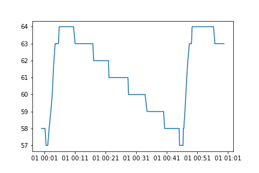

极简中式低温锅
我怎么早没想到!
两个组件, 一个是电火锅, 一个是温控继电器. 一共不超过150元人民币. (1月21日更新, 温控继电器应当使用PID控制器, 这样总价约200元人民币, 结尾详述)
选型
- 电火锅
电火锅一定要选择足够傻的, 也就是说接通电源就进入工作状态, 断开电源就关闭, 再接通电源还回到工作状态.
万万不可有什么中间的待机状态. 就是那种自作聪明的电器, 接通电源以后进入一个待机状态, 非要等人再按一下才肯工作. 特点是往往有触摸按键, 或者自称微电脑控制.

图中红框标出的这种机械旋钮或者机械开关是最好的.
如果家里有洗碗机, 推荐使用分离式的锅, 好洗. 洗碗机是研究厨艺的必需品.
买锅的时候如果拿不准选个能够7天无理由退货的.
- 温控继电器
淘宝上直接搜索温控继电器就可以了. 有的是模组, 需要自己接线, 还有这种已经装好的, 直接可以接入插头的, 当然这种更简单.

温控继电器的测温头有不同种类, 我现在使用的是金属头, 可以水下测量. 还有空气测量和塑料封印的. 金属头和塑料头都可以防水, 但金属头的材质不明, 也许不适合烹饪食物使用, 以后可能换成塑料头的, 据说是医用级别. 也可能就用食品袋包裹一下金属头就是了.
金属头的好处是很细, 恰好可以从锅盖上的排气孔穿过去. 外面稍微固定一下, 探头最好悬浮在水里.

注意温控继电器的额定功率, 显然要大于电火锅的功率.
(1月21日更新, 温控继电器应当使用PID控制器, 结尾详述)
缺点
先说缺点, 这种设定下没有强制水循环的装置, 不打算放个水泵在里面了. 在没有沸腾的时候, 靠水体自身热量扩散和轻微的循环, 水温不均匀, 也不能快速达到热平衡.
结果就是控温的负反馈响应慢, 温度不能精确控制在一定范围内, 刚才测试中温度设定在60度, 实际最高可以到70度. 我估计可能以后设定温度可能应该比目标温度低上5度.
(1月21日更新, 温控继电器在更换成PID控制器以后, 误差范围在1-2摄氏度, 结尾详述)
优点
- 可以加佐料!
这回可以直接倒卤水进去了, 传统的各种中式调料都可以方便往里加, 一切炖料都不受限制了.
靠低温烹饪作出"里嫩"的部分, 如果有必要, 可以做好后再捞出来煎炸或者烤, 处理出"外焦"的部分. 于是, 很容易做出煎卤牛肉, 或者红烧软炸里脊, 或者其他一次性制作很困难的组合.
- 无需塑料袋
虽说理论上耐120度高温的塑料袋放入六七十度水煮没什么关系, 但总是有些别扭. 而且我发现食品塑料袋并不非常隔水, 或者容易破, 慢煮时间长了以后, 袋子里面的肉汁多多少少会泄露出一些, 用慢煮棒或者热得快的话, 这些蛋白容易粘在加热棒上或者循环水泵上. 现在加热部分是一个完整的锅, 没这些问题了.
- 可以涮火锅
不做低温慢煮的时候, 还可以用来涮锅啊.
下一步
- 低温蒸
我那个电蒸/烤/空气炸锅, 有"低温蒸"这个选项, 我测了一下温度, 大约是在80-85度, 还是有点高了. 我一直很想试试60度蒸出来的牛肉是怎样的.
但直接加笼屉用温控继电器来控制的话, 有问题. 加热水->蒸汽, 这中间水的比热容太大, 空气又是热的不良导体. 于是负反馈控制的波动更大, 蒸汽温度一下子就升到了96度.
有可能需要+超声雾化+防水风扇, 但这样的话就需要考虑插头接线的走法了, 金属笼屉就不合适了, 有可能需要竹笼屉和盖, 比较容易走线.
- 搅拌器
低温煮的部分, 如果加入一个搅拌装置很可能会降低负反馈的波动. 如果不用水泵, 不用塑料, 不用金属, 大概最简单的就是放个竹蜻蜓进去, 从锅盖中心穿进去, 再用电机驱动.
或者也可以找个现成的电动搅拌器, 记得宜家就有一个, 但不知道用电池能持续搅拌多久.
Let it be
经过一下午的测试, 发现温度的波动范围大约在10摄氏度, 波动方向以overshoot为主, 大约是高于设定温度9度.
所以其实是相当不准确啊. 因此做温泉蛋恐怕是没希望了, 那个对温度精度要求很高. 不过反正我也不爱吃.
对于鸡肉来说10度的波动没什么关系, 至少鸡翅是这样, 鸡胸可能要求高一点. 对于牛肉来说10度的波动已经是从三分熟到全熟之间的差别了.
不过, 我觉得可能只要目标温度累积到足够的时间就可以. 比如目标温度是60度, 想煮至少3小时, 那么完全可以设定温度为51度, 然后周期性地波动到60度, 煮个过夜, 那么60度的累积时间怎么样也到3小时了.
所以暂时不打算折腾搅拌器了.
我记录了一个小时的温度变化, 火力大约在"中档", 设定: 启动温度57, 终止温度58, 实际: 最高温度64, 最低温度57, 4分钟从57上升到64, 然后40分钟从64下降回57.约45分钟一个周期 
更新
在推上被科普了PID控制器, 有开放的讨论就是好啊. 等到货了以后再评测.
PID控制器
被科普PID控制器以后, 重新买了一个型号为XH-W2103的控制器. ~100元人民币. 利用其"自整定功能", 可以找到合适的控制参数, 现在的数据是首次"超调"的温度, 也就是从室温25度直接加热开始, 大约只高出1.8摄氏度. 然后误差就在1度之内了.
PID控制器的全程是proportional–integral–derivative controller. 比例-积分-微分控制器.
在youtube上找到了讲解视频
所以现在我推荐是使用PID控制器来控制温度.
还有一个问题, 是上次金属温度探头经过卤水煮过以后, 表面出现了深色的污渍, 刮擦不能去除, 有可能是金属表面的氧化或者腐蚀. 所以下次做卤肉可能需要用一小块塑料食品袋包裹金属温度探头了.